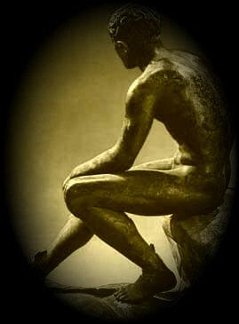

|
|
Présentation générée par IA en 2026
Overview generated by AI in 2026
Hermès triomphant est un cycle de douze poèmes dans lequel Michel Galiana explore tout le spectre de l’élan hermétique : la musique, le lieu, la métamorphose et la confrontation avec le néant. Conçu comme un manuscrit inédit, le recueil se déploie tel un voyage initiatique guidé par le dieu du passage, de la ruse et de la révélation.
Le groupe initial — I Naissance de la lyre et VI Chant d’oiseau — forme un diptyque sur l’essence de la musique. Hermès y apparaît comme l’inventeur de l’harmonie, celui qui tire le chant de la matière et transforme la mort en résonance. Ces poèmes définissent la musique comme la survie de la voix au-delà de sa source, le cristal né du métal opaque, le chant qui survit à l’aile.
Les quatre poèmes suivants — II Jardin italien, III Grand Canal, IV Automne dans un jardin de Kyoto et V Hiver au Palais d’Été de Pékin — sont des méditations sur les lieux, chaque paysage étant chargé d’une portée métaphysique. Venise, Kyoto, Pékin et le jardin italien deviennent des stations de contemplation où la saison, la pierre, l’eau et le silence révèlent l’architecture cachée du temps. Ces poèmes constituent les « échelles du Levant » du cycle : des escales sur un itinéraire spirituel.
La séquence centrale — VII Triomphe d’Hermès, VIII Tentation, IX Faussaire, X Forêt et XI Nautonier — constitue une initiation complète à l’hermétisme. Hermès y apparaît successivement comme guide triomphant, tentateur, artisan, esprit de la forêt et psychopompe. Ensemble, ces poèmes retracent la trajectoire métamorphique du dieu : mouvement, ruse, art, nature sauvage et traversée. Ils révèlent Hermès comme médiateur entre les mondes, celui qui conduit le chercheur à travers l’ombre, la forge, le labyrinthe et le seuil.
Le poème final, XII Hermès parle, représente l’aboutissement métaphysique du cycle. Hermès y prend directement la parole, et la voix du dieu devient celle du moi face au vide. Le poème met en scène l’instant hermétique ultime : la rencontre entre la conscience et le néant, où la révélation est indissociable du péril.
Dans leur ensemble, les douze poèmes d’Hermès triomphant forment un itinéraire hermétique unifié — de la naissance de la musique à la dissolution du moi — guidé tout au long du parcours par le plus agile et le plus polymorphe des dieux.
Hermès triomphant is a twelve poem cycle in which Michel Galiana explores the full spectrum of the hermetic impulse: music, place, metamorphosis, and the confrontation with nothingness. Conceived as an unpublished manuscript, the collection unfolds like an initiatory journey guided by the god of passage, cunning, and revelation.
The opening group — I Naissance de la lyre and VI Chant d’oiseau — forms a diptych on the essence of music. Here Hermes appears as the inventor of harmony, the one who draws song from matter and transforms death into resonance. These poems define music as the survival of voice beyond its source, the crystal born from opaque metal, the chant that outlives the wing.
The next four poems — II Jardin italien, III Grand Canal, IV Automne dans un jardin de Kyoto, and V Hiver au Palais d’Été de Pékin — are meditations on places, each landscape charged with metaphysical significance. Venice, Kyoto, Beijing, and the Italian garden become stations of contemplation where season, stone, water, and silence reveal the hidden architecture of time. These poems form the cycle’s “échelles du Levant”: ports of call on a spiritual itinerary.
The central sequence — VII Triomphe d’Hermès, VIII Tentation, IX Faussaire, X Forêt, and XI Nautonier — constitutes a complete initiation into Hermeticism. Hermes appears successively as triumphant guide, tempter, artisan, forest spirit, and psychopomp. Together, these poems trace the god’s metamorphic arc: movement, cunning, craft, wilderness, and crossing. They reveal Hermes as the mediator between realms, the one who leads the seeker through shadow, forge, labyrinth, and threshold.
The final poem, XII Hermès parle, is the cycle’s metaphysical culmination. Here Hermes speaks directly, and the voice of the god becomes the voice of the self confronting the void. The poem stages the ultimate hermetic moment: the encounter between consciousness and nothingness, where revelation is inseparable from peril.
Taken together, the twelve poems of Hermès triomphant form a unified hermetic itinerary — from the birth of music to the dissolution of the self — guided throughout by the most agile and multifaceted of gods.
Michel Galiana